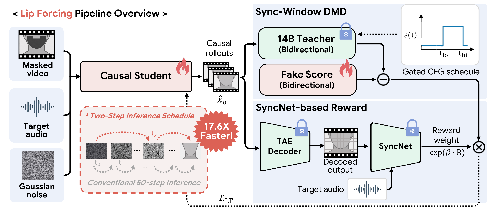

Lip Forcing:
Few-Step Autoregressive Diffusion
for Real-time Lip Synchronization
1KAIST AI ·
2AIPARK
*Equal contribution · †Corresponding author
Lip Forcing is the first autoregressive diffusion model for V2V lip synchronization. It distills a 14B bidirectional teacher into two-step causal students at 1.3B and 14B scales. The 1.3B student runs 17.6× faster than its same-scale bidirectional counterpart, and the 14B student runs 39.7× faster than its teacher at comparable reference fidelity — reaching 31 FPS real-time on a single GPU (H100).
Preview
Nine outputs from Lip Forcing (14B) on TalkVid. Hover near the left or right edge to pan the row.
The fidelity–sync tradeoff

Diffusion lip-sync models exhibit a CFG fidelity-sync tradeoff: classifier-free guidance lifts audio-visual synchronization but at the cost of reference fidelity, and the two regimes do not coexist at any single CFG scale. To distill this into a two-step student we run an Euler-jump factorial over $(s_0, s_1)\in\{1.0, 4.5\}^2$; the no-CFG → CFG schedule lands near t = 0.769 (~ODE step 30) on a favorable point — reference fidelity matched to the CFG=1.0 ceiling and sync within ~0.4 Sync-C of the CFG=4.5 ceiling. The remaining sync gap is closeable with explicit SyncNet supervision, while the reference cost incurred by a guided first step is not. This selects the operating point the student is trained to land on at inference: a single landing at $t\!=\!0.769$ after one no-CFG velocity step from $t\!=\!0.999$.
Overall framework


The 14B bidirectional teacher provides velocity targets along a
windowed schedule (Sync-Window DMD), while the causal
student uses chunk-wise sliding-window attention
(sink=1, window=7) to support autoregressive inference at
deployment. Trained this way, both Lip Forcing variants land on the
upper-right corner of the speed–quality Pareto
frontier: the 1.3B student reaches 31 FPS
— past the 25 FPS playback rate of the test videos — while the 14B
student delivers a 4.6× throughput gain over
LatentSync at comparable reference fidelity. No prior method occupies
the upper-right region; the closest competitors trade off either
quality (Wav2Lip, MuseTalk) or speed (LatentSync, OmniAvatar).
Comparison on HDTF
Throughput measured on a single H100. Best in bold; second-best underlined.
| Method | Steps | FPS ↑ | TTFF ↓ | Sync-C ↑ | Sync-D ↓ | CSIM ↑ | FID ↓ | FVD ↓ | SSIM ↑ |
|---|---|---|---|---|---|---|---|---|---|
| Ground truth | — | — | — | 7.95 | 6.92 | — | — | — | — |
| Wav2Lip | — | 479.60 | 0.17 | 8.56 | 6.70 | 0.946 | 24.15 | 384.82 | 0.911 |
| VideoReTalking | — | 2.67 | 3.76 | 8.22 | 6.70 | 0.910 | 24.59 | 306.63 | 0.883 |
| MuseTalk | 1 | 23.07 | 2.72 | 7.94 | 6.95 | 0.957 | 9.68 | 127.44 | 0.943 |
| Diff2Lip | 25 | 15.47 | 5.04 | 8.35 | 6.32 | 0.943 | 20.32 | 285.69 | 0.907 |
| LatentSync | 20 | 3.23 | 6.29 | 8.10 | 6.51 | 0.967 | 6.90 | 117.91 | 0.950 |
| X-Dub | 30 | 0.91 | 163.64 | 7.58 | 7.66 | 0.898 | 14.76 | 183.99 | 0.831 |
| OmniAvatar LS (1.3B) | 50 | 1.79 | 45.36 | 8.04 | 6.99 | 0.927 | 8.06 | 143.75 | 0.904 |
| OmniAvatar LS (14B) | 50 | 0.38 | 213.72 | 8.98 | 6.11 | 0.934 | 6.71 | 133.87 | 0.911 |
| Self Forcing (1.3B) | 4 | 27.48 | 0.38 | 7.12 | 7.80 | 0.939 | 7.51 | 124.78 | 0.915 |
| Lip Forcing (1.3B) | 2 | 31.58 | 0.32 | 6.88 | 7.93 | 0.943 | 6.76 | 118.86 | 0.919 |
| Lip Forcing (14B) | 2 | 15.11 | 0.54 | 7.59 | 7.23 | 0.949 | 7.01 | 107.88 | 0.938 |
See the Pareto frontier in the Method section for the speed-quality view of these numbers.
Lip Forcing in action
Outputs from Lip Forcing (14B) on six clips from the TalkVid test set. Unmute the controls to play with audio.
Comparison with baselines
TalkVid test clips. Use the arrows above to switch test sets (TalkVid → HDTF → Hallo3) and the buttons to pick a sample. Playback is synchronized across all six videos.
BibTeX